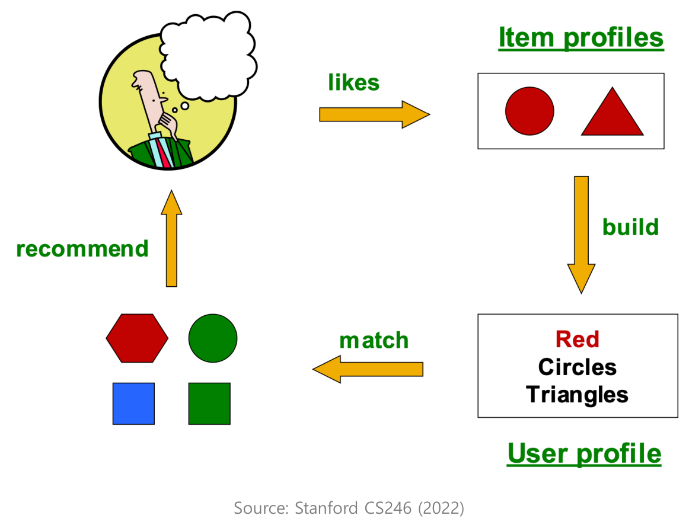

5. 개인화 추천 시스템
학습 안내 · 이전: 시계열 평가 · 다음: 그래프 기반 추천
‘가’에게 아직 보지 않은 영화 C를 얼마나 위에 보여 줄까? 이 장에서는 같은 질문을 영화의 속성, 여러 사람의 평점 기록, 학습한 사용자·영화 벡터로 각각 풀어 본다. 마지막에는 별점을 정확히 맞히는 일과 좋아할 영화를 앞에 놓는 일을 구분한다.
| 읽는 순서 | 확인할 질문 |
|---|---|
| §1. 기록 | 별점, 클릭, 빈칸은 각각 무엇을 뜻하는가? |
| §2. 콘텐츠 | 영화 속성과 사용자 취향만으로 어떻게 추천하는가? |
| §3. 협업 | 누구 또는 어떤 영화와 비슷한지 어떻게 비교하는가? |
| §4. 점수와 오차 | 관측 평점에서 사용자·영화 벡터를 어떻게 배우고 검증하는가? |
| §5. 순위 | 암묵적 기록에서 어느 후보를 앞에 놓도록 학습하는가? |
1. 어떤 기록으로 취향을 추정하는가
모든 사람에게 같은 인기 목록을 보여 주면 비개인화 추천이다. 영화 A 페이지에서 모두에게 똑같이 ‘A와 비슷한 영화’를 보여 주는 것 역시 A에 맞춘 추천이다. 개인화 추천에서는 같은 후보라도 대상 사용자의 기록이나 취향에 따라 점수와 순서가 달라진다.
명시적 피드백(Explicit Feedback)과 암묵적 피드백(Implicit Feedback)
| 기록 | 무엇을 알 수 있나 | 무엇을 조심하나 |
|---|---|---|
| 명시적 피드백: 별점, 좋아요·싫어요 | 사용자가 직접 표현한 반응. 1점과 5점을 구분할 수 있다. | 평가를 남긴 항목과 사람이 전체를 대표하지 않을 수 있다. |
| 암묵적 피드백: 클릭, 시청, 완주, 구매 | 어떤 행동이 관측됐는지 알 수 있다. | 클릭이 만족을 뜻하지는 않는다. 아무 행동도 없었다면 아예 노출되지 않았을 수도 있다. |
효용 행렬(Utility Matrix): 사용자와 영화의 기록을 표로 모은다
행은 사용자, 열은 영화다. 칸에는 문제에 맞는 관측값을 넣는다. 아래는 명시적 평점의 예다. 이후에도 영화 C의 빈칸을 어떻게 다루는지 이 표로 설명한다.
| 사용자 | A | B | C | D |
|---|---|---|---|---|
| 가 | 5 | 3 | — | — |
| 나 | 4 | 2 | 4 | — |
| 다 | 1 | — | 5 | 4 |
‘다’의 A는 실제로 1점을 준 칸이고, ‘가’의 C는 평점을 관측하지 못한 칸이다. 이 둘을 같은 낮은 점수로 처리하면 모델이 잘못 배운다. 별도 시청 행렬에서는 관측한 시청을 1, 미관측을 0으로 저장할 수 있지만, 이때 0은 저장 규칙일 뿐 싫다는 정답이 아니다.
2. 영화의 속성으로 추천하기: 콘텐츠 기반 추천(Content-Based)

영화의 장르나 줄거리는 항목의 속성이다. 콘텐츠 기반 추천은 이 속성과 대상 사용자의 취향 프로필을 비교한다. 그림에 나오는 혼합 방식은 속성과 행동 기록을 함께 쓴다. 행동 기록이 없는 새 영화에도 장르나 줄거리 같은 속성은 있을 수 있다.
장르·감독·줄거리 같은 속성을 모으면 **항목 프로필(Item Profile)**이 된다. 사용자가 선호한 영화들의 프로필을 모으면 사용자 프로필이 된다. 예를 들어 모험과 다큐, 두 속성만 쓰자. ‘가’의 기록에는 모험 단서가 더 많고, ‘다’가 높은 점수를 준 C와 D는 다큐라고 가정한다. 두 사람 모두 아직 보지 않은 후보는 다음 두 편이다.
| 사용자 | 기록에서 얻은 취향 단서 | 같은 두 후보를 보여 주는 순서 |
|---|---|---|
| 가 | 모험 쪽에 더 가까움 | 모험 영화 E → 다큐 영화 F |
| 다 | 다큐 쪽에 더 가까움 | 다큐 영화 F → 모험 영화 E |
후보 영화의 장르는 그대로다. 바뀐 것은 어떤 사용자의 취향과 비교했는가다.

오른쪽 위부터 읽는다. 사용자가 선호한 빨간 원과 삼각형에서 프로필을 만들고, 왼쪽 아래의 후보와 대조한다. 색과 모양은 여기서 영화의 장르처럼 항목을 비교할 특성을 뜻한다. 그림 크게 보기 · 출처: 추천시스템 기초, 12쪽(도식 원출처: Stanford CS246, 2022).

구현 구조: 영화 표현 → 사용자 취향 → 후보 순위

그림의 왼쪽은 취향을 만들기 위한 기록, 오른쪽은 지금 추천할 후보다. 두 갈래는 같은 영화 인코더를 거친 뒤 점수 계산에서 만난다.
- 영화 인코더: 모든 영화를 같은 기준으로 숫자 묶음인 벡터로 바꾼다. 기본형에서는 첫 칸에 모험, 둘째 칸에 다큐 여부를 적는다. 사용자 기록에 들어 있는 영화와 새 후보에 같은 규칙을 써야 각 칸을 같은 뜻으로 비교할 수 있다.
- 사용자 프로필: ‘가’가 취향을 만들 때 참고하는 영화가 A와 B라고 하자. A는 모험만 해당해
[1, 0], B는 모험과 다큐가 모두 해당해[1, 1]이다. 이 예에서는 두 영화를 같은 비중으로 평균해 **[1, 0.5]**를 얻는다. 더 높은 평점이나 최근의 선호에 비중을 더 줄 수도 있다. - 후보 점수와 순위: 후보는 평균 내지 않는다. ‘가’의 취향을 모험 영화 E
[1, 0], 다큐 영화 F[0, 1]와 각각 비교한다. 벡터의 방향이 얼마나 비슷한지 보는 코사인 유사도는 E가 약 0.89, F가 약 0.45다. 따라서 E가 먼저 나온다. 이 값들은 좋아할 확률이나 별점이 아니라 이 예에서 순서를 정하는 점수다. 새 영화를 추천할 때는 이미 본 영화를 후보에서 뺀다.
기본형은 장르 표시 → 평균 → 코사인 유사도만으로 동작한다. 별도로 학습하는 층 없이도 사용자마다 다른 목록을 만들 수 있으므로, 더 복잡한 구조를 도입했을 때 비교할 기준으로 삼기 좋다.
줄거리까지 읽는 모델과 기본 생성형 언어 모델의 차이
줄거리까지 쓰려면 텍스트 인코더가 줄거리를 벡터로 바꾸고, 그 벡터를 장르 정보와 합친 뒤 선형층을 통과시켜 정해진 길이의 영화 벡터를 만들 수 있다. 예를 들어 영화마다 숫자 128개를 내도록 설계한다. 취향을 만들 때와 후보를 평가할 때 모두 이 영화 인코더를 공유한다. 추천 기록으로 모델을 학습한다면 과거에 본 영화로 취향을 만들고, 그 이후에 선호한 후보를 더 위에 놓도록 학습한다. 맞혀야 할 후보를 미리 취향에 섞지 않는다.
| 비교 | 콘텐츠 기반 추천 | 기본 생성형 대규모 언어 모델(LLM) |
|---|---|---|
| 무엇을 읽나 | 사용자가 선호한 영화와 후보 영화의 속성 | 지금까지의 텍스트 토큰 |
| 무엇에 점수를 주나 | 이 사용자와 각 후보 영화의 조합 | 다음에 올 수 있는 어휘 토큰 |
| 무엇을 내놓나 | 이미 있는 후보를 정렬한 추천 목록 | 다음 토큰을 이어 만든 텍스트 |
언어 모델을 영화 인코더에 활용하더라도, 이 구조에서는 줄거리의 특징을 뽑는 역할을 맡긴다. 추천 순위는 사용자 취향 벡터와 영화 벡터를 비교하는 단계에서 정한다.
영화의 속성은 어디서 얻는가
장르를 직접 태그해도 되고, 줄거리에서 특징을 뽑아도 된다. 단어 빈도·역문서 빈도(TF-IDF)는 한 줄거리에서는 자주 나오지만 다른 영화의 줄거리에는 드문 단어에 더 무게를 준다. 예를 들어 거의 모든 소개에 나오는 ‘영화’보다 특정 작품군에 자주 나오는 ‘우주선’이 더 좋은 단서일 수 있다.
콘텐츠 기반 추천의 장점과 한계

교안 14쪽의 장단점을 영화 추천 사례로 다시 그렸다. 그림을 누르면 크게 볼 수 있다.
새 영화에는 평점이 없어도 비교할 속성이 있다. 예를 들어 평점이 한 건도 없는 모험 영화 E도, 장르나 줄거리가 있고 ‘가’의 모험 취향을 이미 안다면 추천할 수 있다. 장르로 비교하는 기본형에서는 “평소에 본 영화와 같은 모험 장르라서 추천했어요”처럼 이유를 보여 주기도 쉽다.
새 사용자에게는 비교할 취향이 없을 수 있다. 기록도 관심사 선택도 없다면 E와 F 중 무엇을 먼저 보여 줄 근거가 없다. 반대로 취향 기록이 충분해도 모험이라는 특징만 계속 강조하면, ‘가’가 즐길 만한 다른 장르가 목록에서 밀릴 수 있다. 영화의 분위기처럼 취향을 가르는 속성이 빠져 있다면 같은 장르 안에서도 차이를 구분하기 어렵다.
다음 절의 협업 필터링은 영화 속성 대신 여러 사용자의 기록에서 다른 추천 단서를 찾는다.
3. 여러 사람의 기록으로 추천하기: 협업 필터링(Collaborative Filtering)
**협업 필터링(CF)**은 장르를 직접 비교하는 대신 여러 사람이 남긴 행동이나 평점의 패턴을 활용한다. 사용자–사용자 방식으로 ‘가’에게 영화 C를 추천할지 판단한다면, ‘가’와 기록이 비슷한 사람 중 C를 평가한 사람의 점수를 참고한다. 항목–항목 방식이라면, 다른 사람들의 기록에서 C와 비슷한 영화를 찾고 ‘가’가 그 영화에 어떤 반응을 보였는지 확인한다.
협업 필터링만 쓰는 구조

그림은 사용자–사용자 방식이다. 입력은 누가 어떤 영화에 평점을 남겼는지를 담은 표다. 먼저 ‘가’와 기록이 비슷한 사용자를 찾는다. 그중 영화 C를 평가한 사람만 남기고, 각 사람의 평점이 ‘가’의 예상 평점에 얼마나 반영될지 정한다. C뿐 아니라 다른 미시청 후보에도 이 과정을 적용하면 ‘가’에게 보여 줄 순위를 만들 수 있다.
**항목–항목 협업 필터링(Item–Item Collaborative Filtering)**은 이와 달리 영화 열끼리 비교한다. ‘가’가 C를 보지 않았더라도, C와 ‘가’가 이미 평가한 A·B 사이의 관계를 여러 사용자의 기록에서 찾을 수 있다.
기록이 얼마나 비슷한지 비교하는 법
- **자카드 유사도(Jaccard Similarity)**는 평가한 영화의 목록만 본다. ‘가’와 ‘나’는 A와 B가 겹치고, 둘 중 적어도 한 명이 본 영화는 A·B·C다. 그래서 3개 중 2개가 겹친다. ‘가’와 ‘다’는 4개 중 A 하나만 겹친다. 별점을 5점에서 1점으로 바꾸어도 목록이 같으면 자카드 값은 그대로다. 두 목록이 모두 비어 있으면 별도 규칙이 필요하다.
- **코사인 유사도(Cosine Similarity)**는 별점 벡터가 비슷한 방향을 가리키는지 본다. 모든 점수를 같은 비율로 늘려도 방향이 같다면 유사도는 변하지 않는다. 빈 칸을 계산용 0으로 채우는 방식도 있지만, 실제로 0점을 주었다는 뜻은 아니다. 비교할 값이 전부 0이면 방향을 정할 수 없다.
‘가’의 C 평점을 추정해 보자. ‘나’는 4점, ‘다’는 5점을 주었다. 두 사람을 똑같이 참고하면 4.5점이다. ‘가’와 더 비슷하다고 판단한 ‘나’의 평점을 75%, ‘다’의 평점을 25% 반영한다고 가정하면 4.25점이다. 여기서 75%와 25%는 설명용 비중이다. 같은 영화 C라도 대상 사용자가 달라지면 참고할 사람과 비중이 달라질 수 있다. 비슷하더라도 C를 평가하지 않은 사람은 이 계산에서 빼고, 참고할 사람이 없으면 전체 평균 같은 대체값을 정한다.

그림은 차이를 강조하기 위한 별도의 작은 예다. 두 사람 모두 A와 B를 평가했으므로 평가한 영화의 목록은 완전히 겹친다. 하지만 한 사람은 A를, 다른 사람은 B를 높게 평가했다. 별점의 방향도 비교하는 코사인 유사도에서는 이 차이가 드러난다. 다만 코사인 유사도가 0.38이라고 해서 ‘취향이 같을 확률이 38%’라는 뜻은 아니다.
항목–항목 예: 영화 C와 비슷한 영화를 찾아 ‘가’의 평점을 읽는다
§1의 표에서 C를 평가한 사람은 ‘나’와 ‘다’다. A를 평가한 사람은 ‘가’·‘나’·‘다’, B를 평가한 사람은 ‘가’·‘나’다. 평가한 사람 목록에 자카드 유사도를 적용하는 예라면 C는 A와 3명 중 2명이 겹치고, B와는 3명 중 1명이 겹친다. 이 예에서는 A가 C와 더 비슷하다.
그다음에는 추천 대상인 ‘가’의 평점으로 돌아온다. ‘가’는 A에 5점, B에 3점을 주었다. C와의 유사도 비율인 2 대 1로 이 두 점수를 섞으면 C의 예상 평점은 약 4.33점이다. 사용자–사용자 방식의 4.25점과 달라지는 이유는, 그 방식이 ‘나’와 ‘다’가 C에 준 평점을 참고했기 때문이다. 실제 시스템에서는 함께 평가한 사람이 너무 적을 때 유사도를 그대로 믿지 않도록 최소 기록 수나 별도 보정 규칙을 둘 수 있다.
협업 필터링의 장점과 한계
| 장점 | 한계 |
|---|---|
| 영화 속성을 직접 정리하지 않아도 된다. 장르나 줄거리 정보가 부족해도 시청·평점 기록이 충분하면 추천할 수 있다. | 아무도 본 적 없는 영화는 추천하기 어렵다. 새 영화에 관한 반응이 없으면 함께 시청한 패턴을 찾을 수 없다. |
| 장르만 봐서는 놓칠 영화를 찾을 수 있다. ‘가’와 비슷한 사람들이 모험 영화와 함께 의외의 코미디도 좋아했다면, 다른 장르를 후보에 올릴 근거가 된다. | 새 사용자나 기록이 드문 사용자에게는 이웃을 찾기 어렵다. 겹치는 영화가 한두 편이면 우연히 취향이 비슷해 보일 수 있다. |
| 사용자들의 실제 반응이 단서가 된다. 같은 장르라도 어떤 작품을 함께 즐겼는지 구분할 수 있다. | 노출이 많은 영화에 기록이 몰릴 수 있다. 많이 보였기 때문에 생긴 기록과 실제 선호를 그대로 동일시하면 인기작에 치우칠 수 있다. |
두 기법을 함께 쓰는 혼합 추천
**혼합 추천(하이브리드 추천)**은 콘텐츠 기반 추천과 협업 필터링의 단서를 함께 사용한다. 아래는 두 방식이 같은 후보에 점수를 매기고, 마지막에 그 점수를 결합하는 한 가지 구조다.

- 같은 후보를 두 방식으로 평가한다. 영화 C의 콘텐츠 점수는 ‘가’가 좋아한 영화와 C의 속성이 얼마나 비슷한지 보고, 협업 점수는 C에 대한 다른 사람들의 반응을 ‘가’의 기록과 연결해 구한다.
- 점수의 의미와 범위를 맞춘다. 코사인 유사도 0.8과 예상 평점 4.25를 그대로 더하면 숫자 범위가 큰 쪽이 결과를 좌우할 수 있다. 두 점수를 비교 가능한 척도로 바꾸고, 얼마씩 반영할지는 검증 데이터에서 정한다.
- 한쪽 점수가 없을 때의 규칙을 정한다. 새 영화 E에 장르와 줄거리는 있지만 시청 기록이 없다면 콘텐츠 점수로 평가할 수 있다. 협업 점수가 없다고 E를 0점으로 처리할 이유는 없다. 사용자 기록이 양쪽 모두에 부족하다면 처음에 관심 장르를 묻거나 인기 목록을 임시로 보여 줄 수 있다.
여기서 혼합한다는 것은 영화 내용과 사용자 행동이라는 두 단서를 함께 쓴다는 뜻이다. 텍스트·이미지처럼 서로 다른 형식의 정보를 함께 쓰는 멀티모달과는 구분한다. 한 시스템에서 두 가지를 모두 사용할 수 있다.
4. 관측 평점에서 사용자와 영화의 표현을 배운다
잠재 요인 모델(Latent Factor Models)과 UV 분해(UV Decomposition)
앞 절의 협업 필터링은 비슷한 사람이나 영화를 찾아 참고했다. 잠재 요인 모델은 평점 패턴을 설명할 짧은 벡터를 사용자와 영화마다 학습한다. 벡터의 각 칸은 데이터에서 학습된 값이다. 콘텐츠 기반 모델의 ‘모험’·‘다큐’ 칸처럼 뜻을 미리 지정하지 않는다.
UV 분해에서는 사용자 벡터를 모은 표 U와 영화 벡터를 모은 표 V를 학습한다. U에서는 사용자 하나, V에서는 영화 하나의 벡터를 고른다. 같은 위치끼리 곱해 더하는 내적으로 그 조합의 점수를 만든다. ‘가’가 [1, 2], C가 [0.5, 1.5]라면 첫 칸에서 0.5, 둘째 칸에서 3을 얻어 합계는 3.5점이다.


교안 28쪽. 가운데 U에서 ‘사용자 한 행’, 오른쪽에서는 ‘영화 한 열’을 골라 짝지어 읽는다. 오른쪽 그림은 V를 돌려 놓은 모습이라 영화가 열에 놓여 있다.
앞 절의 4.25점은 이웃 평점으로, 여기의 3.5점은 학습한 벡터로 만든 별개의 예측이다. 두 방식 모두 ‘가’와 C를 평가하지만 점수의 근거가 다르다. 영화 벡터를 그대로 두고 사용자 벡터만 바꾸면 같은 영화의 예상 점수도 달라진다.
관측된 칸(Non-Blank Entries)만 정답으로 사용한다
평점 예측에서는 값이 채워진 관측 칸만 실제 정답이다. 예를 들어 훈련에 배정된 ‘나’의 C 평점 4는 모델의 점수가 4에 가까워지도록 학습하는 데 쓸 수 있다. ‘가’의 C처럼 빈칸은 모델이 채울 예측 대상이다. 0점으로 채워 정답처럼 학습시키면, 아직 모르는 취향을 싫어하는 취향으로 바꿔 버린다.
관측 칸이라고 해서 전부 훈련에 쓰는 것은 아니다. 일부 관측 평점은 훈련에서 가려 두고 평가에 사용한다. 따라서 훈련용 관측 칸은 학습 정답, 평가용 관측 칸은 검증 정답, 원래 비어 있던 칸은 실제 별점을 모르는 칸이다.
제곱근 평균 제곱 오차(Root-Mean-Square Error, RMSE)
이 지표는 평가용으로 가려 둔 별점과 예측이 얼마나 차이 나는지 보여 준다. 차이를 각각 제곱하고 평균을 낸 뒤 제곱근을 취한다. 큰 실수에 더 무게가 실리며 결과는 다시 별점 단위로 읽을 수 있다.

예를 들어 ‘가’의 A 5점을 4점으로, ‘나’의 C 4점을 2점으로 예측했다면 오차 크기는 1점과 2점이다. 둘을 제곱한 1과 4의 평균은 2.5이고 제곱근은 약 1.58점이다. ‘가’의 C는 원래 정답이 없으므로 여기에 넣지 않는다. 평점 오차가 작다고 추천 목록의 맨 앞에 적합한 영화가 나온다는 보장은 없다. 목록의 순서는 다음 절에서 따로 다룬다.
신경망 협업 필터링(Neural Collaborative Filtering, NCF)
UV 분해의 기본형은 사용자 벡터와 영화 벡터를 내적으로 결합한다. 신경망 협업 필터링의 한 형태는 두 벡터를 이어 붙이고 **다층 퍼셉트론(MLP)**을 통과시켜 점수를 만든다. 어떤 사용자와 어떤 영화 특징의 조합에 점수를 더 줄지 학습할 수 있다.
| 흐름 | 사용자와 영화를 결합하는 방법 |
|---|---|
| 사용자 번호·영화 번호 → 각 벡터 찾기 → 내적 → 점수 | 잠재 요인 모델의 기본형 |
| 사용자 번호·영화 번호 → 각 벡터 찾기 → 이어 붙이기 → 신경망 → 점수 | 신경망 협업 필터링의 한 형태 |
두 방법 모두 영화 장르 없이 상호작용에서 배운 벡터를 쓸 수 있다. 신경망을 썼다는 사실만으로 콘텐츠 기반 추천이 되는 것은 아니다. 또 이 구조를 별점 예측에 쓸지 순위 학습에 쓸지는 학습 목표에 따라 달라진다.
5. 점수를 순위(Ranking)로 바꾸고 순서를 학습한다
순위는 한 사용자의 후보를 점수순으로 배열한 결과다. 예를 들어 ‘가’에게 C가 2, D가 1이라면 C가 먼저 나온다. 이때 점수가 실제 별점일 필요는 없다. 별점 예측은 몇 점을 줄지, 순위 학습은 어느 쪽을 먼저 보여 줄지에 초점을 둔다.
베이지안 개인화 순위(Bayesian Personalized Ranking, BPR)
별점 대신 시청 기록만 있다고 하자. ‘가’가 A를 시청했고 C는 미관측이라면, 학습에서는 같은 사용자 ‘가’에 대해 A 점수가 C보다 높아지도록 비교한다. 이 예의 C는 비교용 음성 후보다. 보지 않았다는 사실을 싫어한다는 정답으로 바꾸는 것은 아니다.
학습에 쓴 A를 새 영화 목록에 다시 올리라는 뜻도 아니다. 추천할 때는 이미 본 영화를 후보에서 빼고, 남은 C와 D 등을 점수순으로 보여 준다. 학습할 때 비교하는 쌍과 추천 화면에서 정렬하는 후보를 구분하자.
시그모이드 함수(Sigmoid Function): 두 후보의 점수 차이를 읽는다

먼저 본 영화 점수에서 미관측 후보 점수를 뺀다. 시그모이드 함수는 이 차이를 0과 1 사이의 값으로 바꾸고 순서는 유지한다. 차이가 0이면 0.5, 본 영화가 1점 앞서면 약 0.73, 1점 뒤지면 약 0.27이다. 이 값은 모델이 그 쌍을 어느 방향으로 얼마나 강하게 점수화했는지 나타낸다. 사용자가 영화를 실제로 좋아할 확률이나 별점으로 바로 읽지 않는다.

BPR에서 이 한 쌍의 순위 손실은 시그모이드 출력이 높을수록 작아진다. 본 영화가 1점 앞서는 쌍의 손실은 약 0.31이고, 순서가 뒤집혀 1점 뒤지면 약 1.31이다. 두 점수에 같은 수를 더하면 차이가 그대로라 이 쌍의 순위 손실도 바뀌지 않는다.
처음 질문으로 돌아가기
‘가’에게 C를 추천할 때, 콘텐츠 기반 추천은 C와 ‘가’가 좋아한 영화의 속성을 비교하고, 이웃 기반 협업 필터링은 여러 사람의 기록에서 닮은 사용자나 영화를 찾는다. 잠재 요인 모델과 신경망 협업 필터링은 기록에서 배운 사용자·영화 벡터로 점수를 만든다. 그 점수가 별점에 얼마나 가까운지와 좋아할 후보를 얼마나 앞에 놓는지는 다른 질문이다.
다음 장에서는 사용자와 영화를 그래프로 연결해 이웃의 정보로 벡터를 갱신한다. 추천 순위 평가에서는 실제로 선호한 후보가 상위에 놓였는지 확인한다.
확인 질문
- 효용 행렬에서 ‘다’의 A는 1점이고 ‘가’의 C는 빈칸이다. 두 칸을 모두 싫어한다는 정답으로 써도 되는가?
- 영화 E에는 시청 기록이 없고 장르·줄거리만 있다. 사용자 취향을 이미 안다면 어떤 단서로 E를 추천할 수 있는가?
- 두 사람이 A·B를 모두 평가했지만 좋아하는 영화가 반대다. 자카드와 코사인 중 어느 쪽이 별점 차이를 반영할 수 있는가?
- 영화 C를 추천할 때 항목–항목 방식은 어느 열끼리 비교하고, 누구의 평점을 가져오는가?
- 모델이 ‘가’의 C를 3.5점으로 예측했다. C의 실제 평점이 없다면 그 칸을 RMSE에 넣을 수 있는가?
- BPR에서 본 영화와 미관측 후보의 점수가 같으면 시그모이드 출력은 얼마인가? 두 점수에 같은 수를 더하면 달라지는가?
해설
- ‘다’의 A만 관측한 낮은 평점이다. ‘가’의 C는 모르는 값이다(§1).
- 영화 E의 항목 프로필을 사용자 취향 프로필과 비교하는 콘텐츠 기반 추천을 쓸 수 있다(§2).
- 자카드는 평가 목록이 완전히 겹쳐 1이다. 코사인은 별점 벡터를 입력으로 쓰면 두 사람의 선호 방향 차이를 반영할 수 있다(§3).
- 여러 사용자의 기록으로 C 열과 ‘가’가 평가한 A·B 열을 각각 비교한다. 마지막에는 ‘가’가 A와 B에 남긴 5점과 3점을 참고한다(§3).
- 넣을 수 없다. 예측은 있지만 실제 평점이 없으므로 오차를 계산할 수 없다(§4).
- 점수 차이가 0이라 출력은 0.5다. 두 점수에 같은 수를 더해도 차이는 0이라 출력과 그 쌍의 순위 손실 모두 같다(§5).